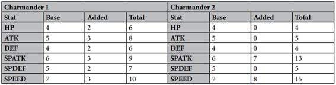
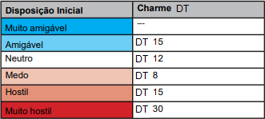
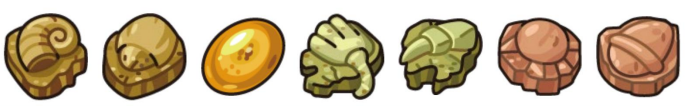

Capítulo Anterior: Classes de Treinador
Pokémon
Pokémon são as criaturas fantásticas que estão no coração e na alma do Pokémon Tabletop United e são tão importantes quanto os recursos, vantagens e habilidades do seu treinador quando se trata de definir seu personagem. Algumas das características de um novo Pokémon são determinadas pelo Mestre e outras pelo jogador. O Mestre geralmente determina quais habilidades um Pokémon possui em seu nível atual na natureza, bem como sua Nature, mas o jogador atribui seus pontos de estatísticas quando captura um Pokémon. Esta página orientará você no gerenciamento de seus Pokémon e na mecânica relacionada.
Regras Básicas e Introdução
Na maioria dos cenários, os Treinadores podem carregar no máximo seis Pokémon por vez durante a viagem. O raciocínio pode variar de cenário para cenário – em um deles, o potencial dos Pokémon serem usados como armas e ferramentas de violência resulta em forte regulamentação do treinamento Pokémon. Em outros cenários, seis é simplesmente o valor regulamentar porque a Liga Pokémon reconhece que seis é o número de Pokémon entre os quais um Treinador habilidoso pode razoavelmente dividir sua atenção ao viajar, sem negligenciar nenhum Pokémon em particular.
Embora um Mestre possa certamente quebrar esta regra para sua própria campanha, é recomendado também do ponto de vista mecânico que os PCs sejam limitados a um fixo de seis Pokémon ativos ao mesmo tempo. Em primeiro lugar, é muito mais trabalhoso rastrear tantos Pokémon ao mesmo tempo. Em segundo lugar, as batalhas ou se tornam muito menos ameaçadoras quando um Treinador tem muito mais Pokémon para recorrer, ou se tornam muito mais longas para apresentar adequadamente o risco de nocautear uma equipe inteira.
Algumas exceções podem ser aplicadas, como criadores que carregam Ovos de Pokémon extras que podem eclodir durante o tempo de viagem ou Treinadores com espírito empreendedor que carregam Pokémon para vender a terceiros. O Rune Master do suplemento Game of Throhs se beneficiaria se pudesse carregar Unown sobressalentes para uso como Glifos – afinal, é altamente improvável que um Treinador registre estatísticas para todos os seus sobressalentes destinados a serem usados dessa forma.
Pokémon extras além do limite de seis geralmente são teletransportados automaticamente em suas Pokébolas para um Centro Pokémon para armazenamento ou para um Professor Pokémon afiliado ao Treinador, se aplicável. Todos os Pokémon de um Treinador são registrados com um ID de Treinador que lhes permite recuperar digitalmente seus Pokémon e comprovar a propriedade.
Nos parágrafos seguintes você verá a aparência de uma entrada Pokédex para um Pokémon e um breve resumo do significado de todas as diversas informações.
- Espécie
- Status Base
- Tipo
- Habilidades
- Evolução
- Informações de Tamanho
- Breeding
- Dieta e Habitat
- Lista de Capacidades
- Lista de Habilidades
- Lista de Movimentos/Ataques
- Espécie: Esta é a espécie do Pokémon, com uma imagem da aparência de um espécime comum da espécie.
- Status Base: As estatísticas básicas de um Pokémon ajudam a determinar como suas estatísticas são alocadas para a batalha.
- Tipo: Cada Pokémon possui um ou dois Tipos elementares, escolhidos
entre os 18 Tipos de Pokémon. Eles são Inseto, Darl, Dragão, Elétrico, Fada, Lutador, Fogo, Voador,
Fantasma, Grama, Solo, Gelo, Normal, Veneno, Psíquico, Pedra, Aço e Água.
Esses Tipos determinam quais tipos de ataques são fortes e fracos contra um Pokémon e têm uma influência geral nas características do Pokémon – certos Tipos são mais propensos a ter características específicas do que outros. Ao contrário dos Pokémon, os Treinadores não possuem um Tipo. - Habilidades: As habilidades são... bem, habilidades especiais separadas dos movimentos que os Pokémon podem usar.
- Evolução: Muitos Pokémon passam por um processo de rápida metamorfose física chamado Evolução. Isso geralmente ocorre em questão de alguns minutos, no máximo, quando certas condições listadas aqui são atendidas.
- Informações de Tamanho: A altura e o peso médios de um Pokémon desta espécie. Isso pode variar entre espécimes individuais e um Mestre pode até mesmo alterar esse valor médio em seu cenário de campanha.
- Breeding: Todas as informações necessárias sobre acasalar Pokémon.
- Dieta e Habitat: Informa onde um Pokémon é encontrado e o que ele precisa comer para sobreviver.
- Lista de Capacidades: As capacidades denotam características básicas de um Pokémon, como o quão rápido ele pode se mover ou quão alto ele pode pular, bem como características mais especializadas, como ser capaz de ver no escuro ou levantar objetos com poderes telecinéticos.
- Lista de Habilidades: Assim como os Treinadores, os Pokémon possuem Perícias, mas são menos maleáveis que as de um Treinador.
- Lista de Movimentos/Ataques: Os movimentos são a principal forma de um Pokémon lutar em batalha, e eles podem aprendê-los de quatro maneiras – subida de nível natural, movimentos de ovo herdados, de TMs e HMs e de Move Tutors.
Lidando com Pokémon
Status de Combate
Assim como os treinadores, os Pokémon têm estatísticas de combate, perícias e capacidades. Embora a maioria das características de um Pokémon sejam definidas para uma espécie inteira no Pokédex, suas estatísticas de combate são determinadas pelas escolhas do treinador. Embora o Mestre geralmente atribua a Nature e as Habilidades de um Pokémon quando capturado pela primeira vez, o Treinador atribui todos os seus Pontos de Estatística até o seu Nível atual.
Comece verificando a Pokédex para ver as estatísticas básicas do Pokémon. Este é o seu ponto de partida. Por exemplo, um Charmander tem 4 HP, 5 Ataque, 4 Defesa, 6 Ataque Especial, 5 Defesa Especial e 7 Velocidade.
Em seguida, aplique a Nature do seu Pokémon. Isso simplesmente aumentará uma estatística e diminuirá outra; O HP só é aumentado ou diminuído em 1, mas todas as outras estatísticas são aumentadas ou diminuídas em 2, respectivamente, até um mínimo de 1. Consulte a lista de Natures Pokémon.
Em seguida, adicione +X Stat Points, onde X é o nível do Pokémon mais 10. No entanto, ao adicionar Stat Points, você deve entender a Regra de Relações Básicas.
A Regra de Relações Base coloca as estatísticas básicas de um Pokémon em ordem, do maior para o menor. Esta ordem deve ser mantida ao adicionar Stat Points. Por exemplo, com Nature neutra, Charmander tem Velocidade > Ataque Especial > Ataque e Defesa Especial > HP e Defesa. Aqui, a velocidade deve sempre permanecer maior que outras estatísticas.
Contudo, estatísticas iguais não precisam ser mantidas iguais. O HP e a Defesa de Charmander não precisam ser mantidos iguais; ambos devem apenas seguir as regras da relação básica, cada um permanecendo sob Ataque e Defesa Especial.
Calcule os pontos de vida do seu Pokémon quando terminar. Pokémon possuem Pontos de Vida de acordo com a seguinte fórmula:
PV do Pokémon = Nível do Pokémon + (HP x3) + 10
Como esses Charmanders são de nível 5, cada um deles tem um total de 15 pontos de estatísticas adicionados. Ambos os Charmanders são autorizados, pois cada estatística segue a regra das Relações Básicas, embora tenham aplicado Pontos de Estatística de forma diferente.
Além disso, existem vários recursos que permitem aos treinadores quebrar relações estatísticas; ao adicionar estatísticas, você não precisa “corrigir” as estatísticas devido às “violações” cometidas devido a esses recursos. Um treinador com o recurso “Enduring Soul”, por exemplo, poderia aumentar o HP de seu Charmander para igualar ou exceder qualquer outra estatística, apesar do fato de estar na prioridade mais baixa para relações de estatísticas básicas. Além disso, este treinador NÃO seria obrigado a aumentar outras estatísticas para “consertar” as violações causadas por este alto HP aumentado artificialmente.
Tabela de Nature
Preferência de Sabor: Os Pokémon preferem um tipo específico de sabor com base em sua Nature. Cada Stat se correlaciona com um sabor:
- HP com Salgado,
- Ataque com Picante,
- Defesa com Azedo,
- Ataque Especial com Seco,
- Defesa Especial com Amargo,
- Velocidade com Doce.
Os Pokémon gostam do sabor associado ao Stat aumentado pela sua Nature e não gostam do sabor associado ao stat reduzido pela sua Nature. Pokémon com Natures neutras não têm preferências de sabor. Você usará essas preferências de sabor ao alimentar seus Pokémon com alimentos especiais, como os Lanches do Chef.
Habilidade
Além das estatísticas de combate, os Pokémon possuem habilidades e movimentos que os definem na batalha.
Todos os Pokémon nascem com uma única Habilidade, escolhida entre suas Habilidades Básicas. Normalmente o Mestre decidirá com qual Habilidade um Pokémon começa, seja aleatoriamente ou escolhendo uma.
Os Pokémon ganham habilidades adicionais à medida que sobem de nível.
No nível 20, um Pokémon ganha uma segunda habilidade, que pode ser escolhida entre suas habilidades básicas ou avançadas.
No nível 40, um Pokémon ganha uma terceira habilidade, que pode ser escolhida entre qualquer uma de suas habilidades.
Embora os Pokémon ganhem apenas três habilidades ao subir de nível, muitos recursos e outros efeitos também podem conceder habilidades adicionais aos Pokémon. Existe uma categoria de Habilidades chamadas Habilidades de Última Chance para cada Tipo que muitas vezes só podem ser obtidas por meio desses métodos e não por meio da progressão de nível normal.
Não há limite máximo para o número de Habilidades que um Pokémon ou Treinador pode ter.
Movimentos
Os movimentos são técnicas de batalha de um Pokémon e têm maior influência em sua capacidade de combate. Um Pokémon pode preencher quantos slots de Movimento quiser com Movimentos de sua Lista de Movimentos Naturais. Os Pokémon podem aprender no máximo 6 movimentos de todas as fontes combinadas. No entanto, certas habilidades e recursos podem permitir que um Pokémon ultrapasse esse limite.
Isso inclui todos os movimentos ganhos ao subir de nível, todos os movimentos do ovo e todos os movimentos do tutor marcados com um (N). No entanto, não mais do que 3 movimentos de um Pokémon podem ser de TMs e Tutores de Movimento, com exceção dos Movimentos Naturais do Tutor mencionados acima. Qualquer recurso que exija Pontos de Tutor para fazer com que um Pokémon aprenda movimentos é considerado um Tutor.
Se um Pokémon aprender um Move via TM ou Move Tutor que poderá aprender mais tarde através do Level Up, uma vez que o Pokémon tenha a oportunidade de aprendê-lo naturalmente, esse Move passa a ser contado como um Move “Natural” para os propósitos do 3-TM/ Limite de movimento do tutor.
Ao contrário dos Pokémon, os Treinadores não têm limite para o número de movimentos que podem aprender.
Capacidades
Assim como os Treinadores, os Pokémon possuem Capacidades que definem características como a velocidade com que podem correr, nadar ou voar, o quanto podem levantar e a distância que podem saltar.
Os Pokémon também possuem uma série de capacidades não básicas que definem suas habilidades especiais, como diminuir de tamanho, respirar debaixo d’água, exercer poderes psíquicos e enxergar no escuro. Certas Classes de Treinador e peças de Equipamento também podem conceder essas capacidades aos humanos, embora isso seja raro.
Ao contrário dos Treinadores, os Pokémon não derivam suas capacidades de seus níveis de habilidade; em vez disso, eles são determinados por suas espécies. Certos movimentos podem conceder capacidades ou aumentar capacidades existentes. Esses bônus serão perdidos se o Movimento for esquecido.
Lista de Habilidades
Os Pokémon também têm Perícias, mas, ao contrário dos Treinadores, a maioria das Perícias de um Pokémon são determinadas por sua espécie e eles têm modificadores pré-determinados em seus valores de rolagem de Perícias. O documento Pokédex atribui a cada espécie um valor de rolagem em Atletismo, Acrobacia, Combate, Furtividade, Percepção e Foco. Algumas espécies, como a linha Porygon, recebem Habilidades adicionais, neste caso Educação Tecnológica.
Estas são as Perícias que decidimos serem mais determinadas pela biologia e pela espécie de um Pokémon, e não por suas personalidades individuais. Embora esses valores devam ser suficientes para a maioria das situações, há dois casos em que um Mestre desejará intervir para tornar um Pokémon mais único entre outros de sua espécie.
Notas da Helô: Note que essas Habilidades são diferentes das Habilidades notadas previamente (eu sei lá pq meteram o mesmo nome pras duas)
Atribuindo novas Habilidades
Tal como nos vários meios de comunicação Pokémon, diferentes campanhas tratarão a inteligência e a personalidade dos Pokémon de forma bastante diferente. Uma campanha faz uma abordagem mais parecida com Pokémon Mystery Dungeon ou qualquer outra franquia Pokémon onde as criaturas têm inteligência mais humana e podem obter conhecimentos complexos. Outra campanha poderia tratá-los principalmente como animais selvagens.
Cabe ao Mestre atribuir Habilidades Sociais e Educacionais, se achar que é apropriado para seu ambiente. Fornecemos modelos abaixo para ajudar nesses casos, que geralmente são apropriados para estágios evolutivos intermediários ou únicos. Algumas espécies terão tendências naturais, como Jiggypuff e outros Pokémon fofos que tendem a ter altos testes de Charme, mas uma campanha pode facilmente apresentar Jigglypuffs rudes e desagradáveis.
Background dos Pokémon
Nem todos os Pokémon da mesma espécie são criados exatamente iguais. Embora os Slowpoke sejam, em geral, criaturas bastante monótonas e letárgicas, os Slowpoke ocasionais podem ser mais acrobáticos do que seus irmãos. Da mesma forma, embora a maioria dos Pokémon pássaros sejam bastante acrobáticos e perspicazes, isso não se aplica necessariamente a todos os membros da espécie, e é igualmente possível ter um Pidove terrivelmente obeso que nem consegue voar.
Para esses casos, crie Origem de Perícias Pokémon que funcionem de forma semelhante à Origem de um Treinador. Escolha uma a três habilidades para aumentar e um número igual de habilidades para diminuir em uma classificação cada e trate-as como os novos valores padrão para os valores de habilidade do Pokémon. Dê um nome ao histórico de habilidade também, como se você estivesse criando um plano de fundo personalizado para o seu treinador! Um antecedente de Batedor Pacifista poderia aumentar a Percepção e a Furtividade enquanto reduz o Atletismo e o Combate, por exemplo.
Subindo de Nível
Sempre que seu Pokémon ganhar Experiência, adicione sua Experiência ao total de Experiência anterior. Se o novo total atingir a “Exp necessária” do próximo nível, o Pokémon sobe de nível. Os Pokémon têm um nível máximo de 100. Consulte a próxima página para ver a Tabela de Experiência Pokémon. Sempre que seu Pokémon subir de nível, siga esta lista:
- Primeiro, ele ganha +1 Ponto de Atributo. Como sempre, os pontos de estatísticas adicionados devem seguir a Regra de Relações Básicas.
- Em seguida, existe a possibilidade de seu Pokémon aprender um movimento ou evoluir. Verifique sua entrada Pokédex para ver se alguma dessas coisas acontece. Se um Pokémon evoluir, certifique-se de verificar a lista de movimentos de sua nova forma para ver se ele aprendeu algum movimento nesse nível. Você pode optar por não evoluir seu Pokémon, se desejar.
- Finalmente, seu Pokémon poderá ganhar uma nova habilidade. Isso acontece no nível 20 e no nível 40, conforme detalhado na seção Lidando com Pokémon: Habilidades.
Pontos de Tutor
Muitos recursos que alteram permanentemente um aspecto de um Pokémon exigem que o Pokémon gaste “Pontos de Tutor”. Cada Pokémon, ao nascer, começa com um único e precioso Tutor Point. Ao ganhar o Nível 5, e todos os outros níveis divisíveis por 5 (10, 15, 20, etc.), os Pokémon ganham outro Ponto de Tutor.
Os Pontos de Tutor são armazenados até serem usados por um TM, Feature ou Poké Edge. Uma vez usados, os Pontos de Tutor são perdidos para sempre. Na maioria das vezes, esses recursos ensinam movimentos, mas podem alterar outros aspectos de um Pokémon. Os recursos que se aplicam ao “seu Pokémon” terão todos os efeitos removidos e os Pontos de Tutor serão reembolsados se esses Pokémon forem dados a outro Treinador. Você também pode ganhar Pontos Tutor através de Heart Boosters, que são vitaminas que concedem 2 Pontos Tutor.
Evolução
Ao evoluir, diversas mudanças ocorrem em um Pokémon. Pegue as estatísticas básicas da nova forma, aplique a Nature do Pokémon novamente, reaplique todas as vitaminas que foram usadas e, em seguida, reajuste as estatísticas do Pokémon, espalhando as estatísticas como desejar. Novamente, os Pokémon adicionam +X pontos de estatísticas às suas estatísticas básicas, onde X é o nível do Pokémon mais 10. É claro que você ainda deve seguir a regra de relações básicas.
Em seguida, verifique Habilidades e Movimentos. As habilidades mudam para 0 corresponder à habilidade no mesmo lugar na lista de habilidades da evolução. Quando os Pokémon evoluem, eles podem aprender imediatamente quaisquer movimentos que sua nova forma aprenda em um nível inferior ao nível mínimo para evolução, mas que sua forma anterior não conseguiu aprender. Por exemplo, Snorlax poderia aprender Yawn e Belly Drum.
Por fim, verifique as habilidades e capacidades do Pokémon e atualize-as para sua forma evoluída.
PokéRecursos
Embora muitos Recursos permitam que Pontos de Tutor sejam gastos para melhorar seu Pokémon, isso não significa que os Pontos de Tutor precisam ficar parados se você não tiver acesso a esses Recursos.
Após uma hora de treinamento, os Pokémon poderão gastar Tutor Points para ganhar qualquer um dos Poké Edges listados abaixo, desde que atendam a todos os pré-requisitos. Se um Pokémon perder os pré-requisitos de um Poké Edge que possui, ele será removido e os Tutor Points serão reembolsados.
Poké Edges de Stats e de Perícias
Os Pokémon não precisam ser limitados por suas inclinações naturais. Os treinadores podem usar esses Poké Edges para permitir que seus Pokémon se destaquem de maneiras inesperadas.
Varredor Misto
[3 Ranks]
Pré-requisitos de Rank 1: Nível 10, investido pelo menos 5 pontos de estatísticas LevelUp em ataque e ataque especial
Pré-requisitos de Rank 2: estatísticas de aumento de nível em ataque e ataque especial
Pré-requisitos de Rank 3: Nível 40, investido pelo menos 15 pontos de estatísticas de aumento de nível em ataque e ataque especial
Custo: 1 Ponto de Tutor por Classificação
Efeito: A cada Rank, o usuário ganha 3 Stat Points para distribuir livremente entre HP, Defesa, Defesa Especial ou Velocidade. Esses pontos de bônus são tratados como se fossem pontos de “Subida de nível” e não alteram as estatísticas básicas.
Nota: Os pontos de estatísticas ganhos no Nível 1 contam como pontos de “Subida de Nível” para fins de cumprimento dos pré-requisitos, para ficar claro.
Conflito de Ataque
Pré-requisitos: Nenhum
Custo: 1 Ponto de Tutor
Efeito: Selecione Ataque ou Ataque Especial. A partir de agora, esse Stat não precisa permanecer superior aos Stats que ele supera nas Relações Base, e da mesma forma todos os outros Stats superados por ele não precisam permanecer inferiores.
Melhoria de Perícias
Pré-requisitos: Nenhum
Custo: 1 Ponto de Tutor
Efeito: Aumente a classificação de uma Perícia que esteja atualmente igual ou inferior ao nível padrão para a espécie. Esta Vantagem pode ser obtida diversas vezes, cada vez selecionando uma Perícia diferente.
Nota: Se uma evolução ou outro efeito permanente fizer com que o nível de habilidade ultrapasse 6, este Poké Edge será reembolsado.
A força do Azarão
Pré-requisitos: Nenhum
Custo: 1 Ponto de Tutor
Efeito:O usuário tem cada uma de suas estatísticas básicas aumentadas em +1. O usuário não poderá mais evoluir
Potencial realizado
Pré-requisitos: Nível 15, o usuário é um Pokémon Underdog
Custo: 2 Pontos de Tutor
Efeito: Subtraia o total de estatísticas básicas da espécie do usuário de 45. O usuário ganha pontos de estatísticas de bônus iguais ao restante. Esses pontos de estatísticas devem seguir as relações de estatísticas básicas normalmente. Se o usuário evoluir para uma espécie com Base Stat Total 45 ou superior, o Potencial Realizado será removido e os Pontos do Tutor serão reembolsados.
PokeRecursos de Habilidade e Movimento
Embora todos os Pokémon possam usar suas Habilidades e Movimentos, Treinadores habilidosos podem ensinar seus Pokémon a aprender mais dessas técnicas ou aperfeiçoá-las.
Conexão Avançada
Pré-requisitos: uma habilidade com a palavra-chave Connection
Custo: 1 Ponto de Tutor
Efeito: Escolha uma Habilidade com a Palavra-chave de Conexão que o alvo possui; o Connected Move não ocupa mais um espaço de movimento para o usuário.
Domínio de Habilidade
Pré-requisitos: Nível 60
Custo: 3 Pontos de Tutor
Efeito:O Pokémon ganha uma Habilidade adicional, escolhida dentre qualquer Habilidade para a qual ele poderia se qualificar naturalmente.
Treinamento de precisão
Pré-requisitos: Nível 20
Custo: 1 Ponto de Tutor
Efeito: Escolha um Movimento com DT 3 ou superior; a DT do movimento alvo é permanentemente reduzida em 1. Este Poké Edge pode ser usado até três vezes, cada vez selecionando um movimento diferente.
Lições do azarão
Pré-requisitos: Força do Azarão
Custo: 1 Ponto de Tutor
Efeito:Escolha um movimento de subida de nível de uma das evoluções finais do usuário que ele possa aprender no nível atual ou abaixo dele. O usuário aprende aquele movimento como se fosse um movimento de subida de nível e agora pode aprender movimentos de TMs, HMs e tutoria nas listas dessa evolução final. As Lições do Underdog podem ser feitas até três vezes, mas devem usar a mesma Evolução Final todas as vezes no caso de Pokémon com múltiplas Evoluções Finais.
PokeRecursos de Capacidades
Muitos Pokémon possuem Capacidades Especiais que representam talentos inatos possibilitados por sua biologia única ou poderes elementais. Embora cada Pokémon possa usar as Capacidades de sua linhagem familiar, os Treinadores podem orientar seus Pokémon para aprimorar ainda mais suas habilidades nesses talentos.
Treinamento de capacidade
Pré-requisitos: Nível 20
Custo: 1 Ponto de Tutor
Efeito: Aumenta o poder ou a capacidade de salto em 1. O Treinamento de Capacidade pode ser realizado diversas vezes, cada vez aumentando uma Capacidade diferente.
Mobilidade Avançada
Pré-requisitos: Nível 20
Custo: 1 Ponto de Tutor
Efeito: Aumenta uma Capacidade de Movimento em 2. Esta Vantagem pode ser obtida múltiplas vezes, mas não pode ser aplicada mais de uma vez à mesma Capacidade de Movimento.
Aura Pulse
Pré-requisitos: Nível 20
Custo: Nível 30, Leitura de Aura, pertencer a um Treinador com Aura Pulse
Efeito: Aumenta o poder ou a capacidade de salto em 1. O Treinamento de Capacidade pode ser realizado diversas vezes, cada vez aumentando uma Capacidade diferente.
Ataques básicos à distância
Pré-requisitos: Nível 20, um entre Firestarter, Fountain, Freezer, Guster, Materializer, ou Zapper
Custo: 1 Ponto de Tutor
Efeito: Escolha uma das Capacidades listadas nos pré-requisitos para este Poké Edge. Ataques de Luta modificados por essa capacidade agora podem ser feitos a um alcance de até 6 metros. Este Poké Edge pode ser obtido várias vezes, selecionando uma capacidade diferente a cada vez.
Farejador de Trilha
Pré-requisitos: Nível 20, Capacidade de Rastreador
Custo: 1 Ponto de Tutor
Efeito: O usuário recebe um bônus igual ao seu nível de foco em todos os testes de percepção para usar a capacidade de rastreador.
Sismômetro
Pré-requisitos: Nível 20, Capacidade Tremorsense
Custo: 1 Ponto de Tutor
Efeito: O alcance do Tremorsense do usuário é aumentado em um número de metros igual ao seu Nível de Percepção.
Isca Atraente
Pré-requisitos: Nível 20, Capacidade Sedutora
Custo: 1 Ponto de Tutor
Efeito: Ao ativar a Capacidade Sedutora, o usuário adiciona o maior valor de Atletismo ou Foco ao teste do d20.
Invisibilidade estendida
Pré-requisitos: Nível 20, Capacidade de Invisibilidade
Custo: 1 Ponto de Tutor
Efeito: O usuário pode permanecer invisível por até 8 minutos
Leitura Distante
Pré-requisitos: Nível 20, Capacidade Telepática
Custo: 1 Ponto de Tutor
Efeito: O usuário trata seu Nível de Foco como 2 a mais para fins de determinar o alcance do Telepata.
Rosqueamentos precisos
Pré-requisitos: Nível 20, Capacidade Rosqueamento
Custo: 1 Ponto de Tutor
Efeito: O usuário pode usar sua Capacidade Rosqueamento a um alcance de 6 metros e com DT de 3 em vez de 6.
Maestria de Telecinese
Pré-requisitos: Nível 20, Capacidade Telecinética
Custo: 1 Ponto de Tutor
Efeito: O usuário trata seu Nível de Foco como 2 a mais para fins da Capacidade Telecinética.
Mega Evolução
Mega Evolução é um novo tipo de transformação física que o Pokémon pode sofrer, semelhante a uma evolução temporária. Vários Pokémon diferentes podem Mega Evoluir, incluindo alguns que já estão em um terceiro estágio evolutivo. No entanto, dois pré-requisitos devem ser atendidos antes que a Mega Evolução possa ocorrer.
Primeiro, o Pokémon deve possuir um tipo especial de Held Item chamado Mega Stone. Mega Stones são específicas para uma linha e forma de espécie individual; uma Mega Stone que funciona para Charizard não funcionaria para Blastoise. Em segundo lugar, seu treinador deve estar usando um item de slot de acessório chamado Mega Ring.
Quando um Pokémon MegaEvolui, as suas Estatísticas de Combate mudam, recebendo um aumento geral (de cerca de 10 pontos!), e ganha uma nova Habilidade e por vezes muda os seus Tipos. A habilidade obtida com a Mega Evolução é sempre adicionada à lista de habilidades atual de um Pokémon e não substitui uma habilidade atual. Um Pokémon não pode ganhar duas instâncias da mesma habilidade através da Mega Evolução, como Mega Blaziken com Speed Boost. Nesses casos, a Mega Evolução concede outra Habilidade que o usuário pode ganhar naturalmente, mas que não possui no momento.
Existem duas maneiras de lidar com as mudanças nas estatísticas da Mega Evolução, dependendo de quanta contabilidade você está disposto a fazer. Você pode aplicar as alterações diretamente às estatísticas atuais do seu Pokémon, como se fossem pontos aplicados ao subir de nível, ou pode aplicar as alterações às suas estatísticas básicas e manter uma segunda folha de estatísticas para a forma Mega Evoluída do seu Pokémon. Semelhante ao Modo Zen de Darmanitan, se você escolher a última opção, deverá manter o HP Stat em ambas as formas iguais. Você pode quebrar as Relações Base para fazer isso
A Mega Evolução pode ser acionada no turno do Pokémon ou do Treinador como uma Ação Rápida. Uma vez acionada, uma Mega Evolução dura pelo resto da cena, mesmo que o Pokémon seja nocauteado. Um Mega Ring só pode suportar uma Mega Evolução por vez, ou seja, uma vez que um Treinador Mega Evolui um Pokémon, ele não pode Mega Evoluir nenhum outro pelo resto da Cena.
Ao contrário de outros itens retidos, as Mega Stones não podem ser removidas de seus usuários depois que a Mega Evolução for ativada, mesmo através dos efeitos de movimentos como Knock Off e habilidades como Magician.
Os seguintes Pokémon possuem formas Mega Evoluídas: Venusaur, Charizard, Blastoise, Beedrill, Pidgeot, Alakazam, Slowbro, Gengar, Kangaskhan, Pinsir, Gyarados, Aero-dactyl, Mewtwo, Ampharos, Steelix, Scizor, Heracross, Houndoom, Tyranitar, Sceptile, Blaziken, Swampert, Gardevoir, Sableye, Mawile, Aggron, Medicham, Man-ectric, Sharpedo, Camerupt, Altaria, Banette, Absol, Glalie, Salamence, Metagross, Latias, Latios, Kyogre, Groudon, Rayquaza, Lopunny, Gallade, Garchomp, Lucario, Abomasnow, Audino, Diancie.
Claro, você pode decidir criar suas próprias Mega Evoluções para sua campanha, especialmente como um impulso no final do jogo para o Pokémon inicial do Treinador. Isso é relativamente fácil de fazer. As Mega Evoluções proporcionam alterações de estatísticas que equivalem a um bônus líquido de +10, geralmente distribuído em 3 ou 4 estatísticas diferentes. HP nunca é alterado por uma Mega Evolução. Quando um Pokémon Mega Evolui, ele também ganha uma nova Habilidade. Além disso, uma Mega Evolução pode envolver uma mudança de Tipo.
Lealdade
O Pokémon de um Treinador não existe no vácuo. Suas Natures, gostos, desgostos e hábitos das espécies desempenham e devem desempenhar um papel na forma como um treinador interage com sua equipe. Conduta cruel e remédios amargos, mesmo na busca por ser o melhor, podem ter consequências graves se um Treinador exagerar.
A Lealdade de um Pokémon é um valor secreto mantido pelo Mestre.
Existem 7 classificações de Lealdade, de 0 a 6, e essas classificações medem o quão bem o Pokémon ouve você, quão desafiadores eles podem se tornar ou quão vulneráveis eles são a serem capturados e roubados por pessoas ilícitas. Os Movimentos Retorno e Frustração também dependem da Lealdade.
Observações da Helô: Por exemplo, utilizar um Pokémon como Honedge como uma espada empunhada pelo treinador, poderá acarretar baixa lealdade e amizade com o pobre Pokémon que não gostaria de ser utilizado como uma arma física. Portante, mancebos de mentes diabólicas, sempre repensem suas decisões e escolhas, afinal elas sempre terão consequências :D
Lealdade 0
Pokémon Lealdade 0 detestam seus treinadores e os desafiam em todas as oportunidades. Você deve fazer um teste de comando DT 20 para dar comandos a Pokémon com 0 de lealdade. Se você falhar, o Pokémon poderá ficar sem fazer nada ou usar qualquer Movimento ou Ataque que desejar em qualquer alvo que desejar – incluindo seu Treinador ou outros espectadores indefesos!
Esses Pokémon são geralmente o produto de maus tratos crônicos e brutais, como os Pokémon mantidos por um Lasher que nunca conseguem se recuperar totalmente dos ferimentos infligidos por seu treinamento brutal ou pela aplicação de recursos como o Golpe do Chicote. Geralmente é necessário um esforço especial para rebaixar um Pokémon a esse nível de lealdade.
No entanto, não é incomum que Pokémon também sejam capturados neste Nível de Lealdade. Como um exemplo extremo, um Treinador que esmagasse o ninho de ovos de uma mãe Pokémon e depois a capturasse ganharia a ira daquele Pokémon por direito!
Em um caso mais benigno, um Pokémon especialmente poderoso e selvagem que foi capturado por um golpe de sorte poderia começar com Lealdade 0 ou até mesmo exigir um Command Check superior a 20 para ter ordem na batalha no início. O Treinador teria que provar o seu valor para superar este obstáculo.
O comportamento típico dos Pokémon Lealdade 0 pode variar amplamente, desde o medo quase paralisante de seu treinador até um desafio incrivelmente ativo. De qualquer forma, geralmente não é uma boa ideia deixá-los desacompanhados ou mesmo soltá-los e desenfreálos em público, pois eles podem ter o hábito de fugir ou até mesmo atacar os transeuntes.
Lealdade 1
Os Pokémon Lealdade 1 também não gostam de seu treinador e exigem um teste de comando DT 8 para dar comandos em batalha.
A ira deles por seus treinadores é menos extrema do que o caso dos Pokémon Lealdade 0. Muitas vezes também são maltratados, mas em menor grau. Um Treinador que usa consistentemente recursos como Pressão e não toma nenhum cuidado especial para garantir que seus Pokémon se divirtam provavelmente acabará com uma equipe que se ressente deles.
Pokémon que se sentem pegos de maneira injusta ou imerecida podem começar com Lealdade 1, principalmente se forem Pokémon que tendem a ter um forte senso de honra, como Gallade.
No entanto, nem sempre é culpa do Treinador que um Pokémon esteja neste Nível de Lealdade. Por exemplo, se um Treinador resgata um Pokémon de um laboratório da Equipe Rocket ou do porão de um proprietário abusivo, o Pokémon pode sentir desconfiança em relação a ele devido a um sentimento arraigado de paranóia e medo por todos os Treinadores.
Embora não sejam tão obviamente perigosos quanto os Pokémon Lealdade 0, os Pokémon Lealdade 1 exibirão um comportamento indisciplinado quando soltos de suas Pokébolas e podem fazer pequenas demonstrações de desafio, como tropeçar “acidentalmente” em seu treinador enquanto caminham pela rua ou assustar Pokémon selvagens que seu treinador está tentando fazer amizade.
Lealdade 2
Os Pokémon com Lealdade 2 gostam bastante de seu treinador, mas não têm nenhum carinho especial por eles.
A maioria dos Pokémon selvagens capturados começará neste Nível de Lealdade, e também não é preciso muito para manter esse nível de Lealdade. Contanto que um Pokémon seja bem alimentado e receba as necessidades básicas, ele tolerará seu Treinador, mesmo que não esteja particularmente disposto a fazer o possível por ele.
Mesmo que um Treinador faça uso consistente de Recursos como Press, tratar seus Pokémon com respeito e cuidado no resto do tempo pode manter sua Lealdade nesse nível, em vez de cair para 1 ou 0.
Os Pokémon Lealdade 2 geralmente se comportam bem quando estão fora de suas Pokébolas, mas não demonstram muito afeto abertamente. No entanto, eles geralmente seguem ordens e não atrapalham.
Lealdade 3
Pokémon Lealdade 3 é a lealdade média para a maioria dos Pokémon – esses Pokémon gostam de seus treinadores e os respeitam até certo ponto.
A maioria dos Pokémon atinge pelo menos esse nível de lealdade se forem tratados relativamente bem. Se um Treinador evitar Recursos abusivos e medicamentos repulsivos e passar mais tempo com seus Pokémon, ele atingirá esse Nível de Lealdade com o tempo. Também é possível que um Pokémon comece com Lealdade 3.
Por exemplo, a maioria dos Pokémon nascidos de ovos se relacionarão facilmente com seus treinadores como figuras parentais e começarão neste Nível de Lealdade. Tornar-se amigo de um Pokémon e ganhar sua confiança, em vez de vencê-lo para capturá-lo, também resultará frequentemente em um Nível de Lealdade inicial mais alto.
Pokémon deste nível de Lealdade e superior buscarão ativamente brincar ou se divertir com seus Treinadores e se sentirão desapontados ou negligenciados se forem ignorados ou deixados no Sistema de Armazenamento Pokémon por longos períodos de tempo. A maioria dos Treinadores, mesmo quando criaram uma “equipe de torneio” estabelecida para lutar, encontrarão tempo para ficar com seus outros companheiros Pokémon.
Esse cuidado superior tem seus benefícios, é claro. Pokémon com Lealdade 3 ou superior podem tentar interceptar ataques direcionados a seus Treinadores em batalha. Eles também costumam adotar uma postura mais proativa quando estão fora de suas Pokébolas, quando se trata de procurar coisas úteis ou apontar perigos potenciais para seus treinadores.
Lealdade 4
Os Treinadores que fizerem um esforço extra – procurando alimentos e lanches que se ajustem aos perfis de sabor preferidos de seus Pokémon, levando seus Pokémon a um Groomer e gastando tempo satisfazendo os interesses de seus Pokémon fora da batalha, por exemplo – verão seus Pokémon crescendo para este Nível de Lealdade ao longo do tempo.
Pokémon recém-adquiridos quase nunca chegam a este Rank de Lealdade ou superior. Somente circunstâncias especiais podem justificar isso. Por exemplo, um treinador que herdou a antigo Hydreigon da Família após o falecimento de seu pai, líder de ginásio. Ou um Treinador que conquista o profundo respeito de um Venusaur que atua como guardião da floresta, salvando a vida selvagem local de uma grande expedição de caçadores furtivos.
O comportamento dos Pokémon neste Nível de Lealdade é semelhante ao do Lealdade 3, mas levado a um grau maior.
Os Pokémon Lealdade 5 são verdadeiros amigos de seus treinadores e compartilham um vínculo mútuo de grande confiança e respeito.
Neste Nível de Lealdade e superior, o tempo é um dos maiores fatores para determinar se um Pokémon atinge esses Níveis de Lealdade. Um Treinador pode tratar seus Pokémon fenomenalmente bem, mas deve fazê-lo ao longo de muitas aventuras para ganhar esses Níveis de Lealdade. Este tempo que passamos juntos significa que os Pokémon Lealdade 5 e 6 se sentem muito confortáveis com seus treinadores e fazem de tudo para ajudá-los e agradá-los.
Lealdade 6
Lealdade 6 é uma classificação difícil de alcançar, reservada para Treinadores e Pokémon que compartilham um vínculo verdadeiro. Os Pokémon Lealdade 6 costumam ser Pokémon iniciais bem tratados, ou Pokémon que estão com o treinador há tantos anos ou passaram por tantas aventuras que poderiam muito bem ser o inicial daquele treinador.
Os Pokémon deste Rank de Lealdade demonstram um vínculo de confiança absoluto com seus Treinadores e
estão mais do que dispostos a arriscar suas vidas por eles – e na maioria dos casos, seus
Treinadores sentem o mesmo.
Pokémon em Lealdade 6 podem tentar interceptar ataques direcionados a
qualquer aliado em batalha.
A maioria dos Pokémon deste Nível de Lealdade passaram por sérias provações e tribulações com seus Treinadores. Embora seja certamente possível elevar um Pokémon até Lealdade 6 com um estilo de vida indiferente, é muito mais comum que Pokémon que enfrentaram o perigo muitas vezes ao lado de seus Treinadores alcancem esse Nível de Lealdade. A maioria dos Pokémon atinge pelo menos esse nível de lealdade se forem tratados relativamente bem. Se um Treinador evitar Recursos abusivos e medicamentos repulsivos e passar mais tempo com seus Pokémon, ele atingirá esse Nível de Lealdade com o tempo. Eles conhecem bem seus treinadores, podem sentir intuitivamente quando estão chateados e conseguem perceber quase todas as tentativas de personificação.
Mudando a Lealdade
Em última análise, cabe ao Mestre determinar quando o Nível de Lealdade de um Pokémon aumenta ou diminui. Eles podem lhe dar dicas sobre o quanto um Pokémon ama você, mas não são obrigados a lhe dizer o nível de lealdade preciso de um Pokémon.
Aumentar a Lealdade é mais difícil nos extremos do espectro de Lealdade, sejam eles baixos ou altos. Pokémon com um Nível de Lealdade muito baixo, como 0 ou 1, têm dificuldade em desenvolver a confiança em um Treinador e relutam em estabelecer um vínculo inicial forte com ele. Muitos Pokémon nesses Ranks de Lealdade estão traumatizados ou cansados e acham muito difícil mudar suas opiniões sobre um Treinador. Um bom tratamento, se dado apenas ocasionalmente, pode ser percebido por um Pokémon cauteloso como uma armadilha, e é necessário um esforço concentrado durante um longo período de tempo para construir a confiança que foi perdida através de comportamento abusivo.
No caso de baixa Lealdade resultante de um Pokémon se sentir como se tivesse sido capturado imerecidamente, nenhuma quantidade de bom tratamento aumentará seu Nível de Lealdade por si só. Para estes Pokémon, os seus Treinadores devem provar que são dignos de comandá-los e nada menos que isso irá merecer o seu carinho. Para muitos Pokémon nesta categoria, isso significa simplesmente demonstrar destreza em batalha, o que é feito mais facilmente por meio de Desafios de Ginásio. Para outros Pokémon que apresentam um forte código de conduta ou senso de honra, cumprir seus padrões éticos pode ser a chave para seus Treinadores.
Do outro lado do espectro, é difícil obter um Pokémon de Loyalty 4 até Loyalty 6, principalmente porque muito disso depende do tempo e da oportunidade para demonstrar fortes laços de confiança.
Para ambos os casos, muitas vezes é uma boa ideia que os Mestres construam uma espécie de missão que incorpore o que é necessário para aumentar a Lealdade, quando chegar a hora certa. Um Treinador que luta para ganhar a confiança de um Pokémon resgatado de um laboratório que realizou experimentos horríveis em suas cobaias pode ter a oportunidade de derrubar outro laboratório semelhante ao lado de seu Pokémon. Um Treinador que viajou com seu Starter por muito tempo pode finalmente levá-lo em uma viagem para ver um local especial daquele Pokémon ou enfrentar e derrotar um rival de longa data que foi difícil para os dois superarem em batalhas anteriores.
Como consequência, isso significa que um Mestre deve começar a pensar mais sobre a personalidade, os desejos e os interesses gerais de um Pokémon à medida que ele se aproxima de seu Treinador. Isto é muito importante! Idealmente, um Pokémon daria indicações regulares sobre o que deseja, a fim de orientar um Treinador no caminho para aumentar sua Lealdade.
As mudanças de fidelidade em torno dos valores de 2 a 4 são muito mais simples, em comparação. Um bom tratamento regular levará naturalmente a aumentos na Lealdade, pois um Pokémon passa mais tempo com seu Treinador, enquanto o uso persistente de Medicamentos Repulsivos, Movimentos como Explosão e Recursos como Pressão diminuirá a Lealdade com o tempo. Eventos particularmente extremos, como colocar deliberadamente em perigo a prole de um Pokémon ou arriscar a vida e os membros para reunir um Pokémon com a família perdida, resultarão em aumentos ou diminuições mais rápidas e pronunciadas no Nível de Lealdade, é claro.
Criação de Pokémon
Quando solicitado por um Treinador com Breeder Edge, ou talvez devido à intervenção divina (Mestre), seu Pokémon pode decidir procriar e produzir um ovo. Quando um ovo for produzido, jogue 1d20 para determinar a espécie do ovo. Se o resultado for 5 ou superior, o ovo é da espécie feminina. Se o resultado for 4 ou menos, o ovo é da espécie masculina.
Consulte a lista de movimentos de ovos das espécies de Pokémon Filhos. Anote quaisquer movimentos na lista de movimentos do ovo conhecidos por qualquer um dos pais, ou quaisquer movimentos conhecidos por qualquer um dos pais que a criança possa aprender via TM. Esta é a lista de movimentos de herança do Pokémon .
Nature, Habilidade e Gênero são decididos com base na Classificação Educacional do Pokémon do Criador. Se sua classificação for alta o suficiente, eles poderão escolher. Caso contrário, estes serão decididos pelo Mestre ou gerados aleatoriamente – como o seu Mestre preferir.
A Nature pode ser determinada aleatoriamente facilmente rolando 2d6; o primeiro d6 representa o Stat elevado, o segundo representa o Stat reduzido. Se o mesmo Stat for diminuído e aumentado, isso resulta em uma Nature Neutra. Pode ser escolhido por criadores com classificação de educação Pokémon de Adepto ou superior.
A habilidade é decidida a partir das habilidades básicas da espécie. Pode ser decidido por Criadores com Classificação de Educação Pokémon de Especialista ou superior.
O género pode ser determinado aleatoriamente lançando 100 e verificando o seu Equilíbrio de Género; veja que porcentagem dos Pokémon são mulheres. Se o número obtido for menor ou igual a esse número, o Pokémon é Feminino; caso contrário, é masculino. Pode ser escolhido por criadores com classificação de mestre em educação Pokémon.
Quando o ovo chocar, role 1d100 para ver se o Pokémon é Shiny; em um resultado de 1 ou 100, o Pokémon é especial de alguma forma, determinado pelo seu Mestre. Consulte o Capítulo 11: Executando o jogo para obter mais detalhes sobre Pokémon 'Shiny'.
Capturando Pokémon
Normalmente, a captura de Pokémon é um processo de duas etapas que requer algumas Pokébolas. Pokébolas podem ser lançadas como uma Ação Padrão, como uma Rolagem de Status:Ataque com DT 6, com alcance igual a 4 mais sua Classificação de Atletismo. As Pokébolas que não conseguem atingir o alvo pousam no terreno atrás do Pokémon alvo inofensivamente e geralmente pousam sem quebrar.
Se você obtiver um 20 Natural nesta Verificação de Precisão, subtraia -10 da Rolagem de Captura. Assim que a Pokébola atingir, você deve rolar a Captura. A seguir, considere a raridade do Pokémon. Pokémon brilhantes subtraem 10 da taxa de captura do Pokémon. Pokémon Lendários subtraem 30 da Taxa de Captura do Pokémon. Role 1d100 e subtraia o Nível do Treinador e quaisquer modificadores do equipamento ou Recursos.
Se o resultado for inferior ou igual à Taxa de Captura do Pokémon, o Pokémon será Capturado! Um resultado natural de 100 sempre captura o alvo sem falhar.
Calculando a Taxa de Captura
A taxa de captura de um Pokémon depende de seu nível, pontos de vida, aflições de status, estágio evolutivo e raridade.
Primeiro, comece com 100. Depois subtraia o nível do Pokémon x2.
A seguir, veja os pontos de vida atuais do Pokémon. Se o Pokémon estiver acima de 75% de Pontos de Vida, subtraia 30 da Taxa de Captura do Pokémon. Se o Pokémon estiver com 75% de Pontos de Vida ou menos, subtraia 15 da Taxa de Captura do Pokémon. Se o Pokémon estiver em 50% ou menos, a taxa de captura não será modificada. Se o Pokémon tiver 25% de Pontos de Vida ou menos, adicione um total de +15 à Taxa de Captura do Pokémon. E se o Pokémon estiver com exatamente 1 Ponto de Vida, adicione um total de +30 à Taxa de Captura do Pokémon. Pokémon reduzidos a 0 Pontos de Vida ou menos não podem ser capturados. As Pokébolas simplesmente não conseguirão energizá-las.
A seguir, observe o Estágio Evolutivo do Pokémon. Se o Pokémon tiver duas evoluções restantes, adicione +10 à Taxa de Captura do Pokémon. Se o Pokémon ainda tiver uma evolução, não altere a Taxa de Captura. Se o Pokémon não tiver evoluções restantes, subtraia 10 da Taxa de Captura do Pokémon.
A seguir, considere a raridade do Pokémon. Pokémon brilhantes subtraem 10 da taxa de captura do Pokémon. Pokémon Lendários subtraem 30 da Taxa de Captura do Pokémon.
E por último, considere quaisquer aflições e lesões de status. Condições Persistentes adicionam +10 à Taxa de Captura do Pokémon; Lesões e Condições Voláteis adicionam +5. Além disso, Stuck adiciona +10 à taxa de captura e Slow adiciona +5.
Disposição Pokémon
Nem todos os encontros com Pokémon Selvagens precisam terminar em batalha. Os treinadores podem optar por ajudá-los, fazer amizade com eles ou buscar sua ajuda sem capturá-los. Pokémon pode ser complicado e difícil de prever, mas como acontece com a maioria das coisas na vida, ser amigável e aberto geralmente ajuda ao tentar evitar interações hostis.
Pokémon selvagens têm 6 disposições diferentes em relação aos treinadores ou a um grupo de treinadores, variando de muito amigável à muito hostil.
Pokémon muito amigáveis ou amigáveis tentarão interagir com os treinadores. Os Pokémon Neutros provavelmente continuarão com seus negócios, ignorando ou observando casualmente os Treinadores. Pokémon medrosos serão muito cautelosos com treinadores próximos ou poderão tentar fugir ou se esconder. Pokémon hostis ou muito hostis provavelmente permanecerão firmes contra qualquer incursão, tentarão expulsar os treinadores ou atacá-los diretamente.
A grande maioria dos Pokémon Selvagens começará em Neutro, Medroso ou Hostil em relação a Treinadores aleatórios em seu território. Ajudar Pokémon Selvagens com problemas ou subornálos com comida pode melhorar sua disposição, a critério do Mestre. Se os Pokémon se tornarem Amigáveis ou Muito Amigáveis, eles podem até pedir para serem capturados sem lutar, mas nem sempre. Atacar Pokémon ou atacar seus amigos ou familiares provavelmente arruinarão a disposição de um Pokémon em relação a você. Alguns atos podem ser suficientes para passar de Neutro direto para Muito Hostil, com poucas chances de redenção – machucar ou matar o bebê de um Pokémon, por exemplo.
Como uma Ação Padrão, os Treinadores podem fazer um Teste de Charme para tentar melhorar a Disposição de um Pokémon Selvagem em um passo; Muito hostil para hostil, hostil para neutro, medroso para neutro, neutro para amigável e amigável para muito amigável. A DT do Teste de Charme depende da disposição inicial do Pokémon. Se você falhar, você não poderá tentar melhorar sua disposição novamente através de um teste de Charme, mas outras ações, como fornecer comida ou ajudar o Pokémon, podem aumentar a disposição automaticamente ou pelo menos permitir que você tente novamente, a critério do seu Mestre.
Fósseis Pokémon
Os fósseis são impressões calcificadas de um Pokémon morto há muito tempo que ainda contém um pouco de DNA do Pokémon. Omanyte, Kabuto, Aerodactyl, Lileep, Anorith, Cranidos, Shieldon, Tirtouga, Archen, Amaura e Tyrunt muitas vezes só podem ser encontrados como fósseis, mas isso não significa que não existam fósseis de outros Pokémon.
Pokémon do tipo Pedra, Água, Inseto e Grama são fósseis especialmente adequados, ou esta pode ser uma boa oportunidade para dar a um Player um Pokémon Transformado em Pedra!
Um Treinador com a Vantagem Paleontólogo pode usar uma Máquina de Reanimação ou Máquina de Reanimação Portátil para criar um Ovo a partir de um Fóssil viável. O ovo é chocado no nível 10, diferentemente dos ovos normais.
Se tiverem sucesso, um Ovo do Pokémon é criado com Gênero, Natureza, Habilidades, Movimentos e outros determinados pelo Mestre. Como um Pokémon Selvagem normal, este Pokémon tem potencial para ser Brilhante. O Mestre também pode decidir dar ao Pokémon recém-nascido uma Lista de Movimentos de Herança.
Pescaria
A pesca é sempre uma forma relaxante de passar a tarde. Com uma boa vara de pescar e alguma isca ou isca, é uma maneira fácil de capturar alguns Pokémon do tipo Água.
O que você pode pescar depende da sua vara de pescar. Existem três tipos de varas: Varas Velhas, Varas Boas e Super Varas.
Varas Velhas só são capazes de pescar Pokémon pequenos e não evoluídos de nível 10 ou inferior.
Boas varas podem capturar Pokémon não evoluídos de um Nível a critério do seu Mestre.
Super Varas podem capturar Pokémon de qualquer tamanho e estágio evolutivo, a critério do seu Mestre.
Para pescar, você deve prender uma isca ou isca de pesca na ponta da corda e, em seguida, lançar a linha. Role 1d20 cada 5 minutos. Se você tirar 15 ou mais, um Pokémon Selvagem estará em jogo! Se você rolar 3 vezes sem sucesso, a isca se esgota – no entanto, as iscas podem continuar a ser usadas.
Então você deve fazer um Teste de Atletismo com DT 8. Se tiver sucesso, você consegue puxar o Pokémon. A partir daí, você pode tentar capturar o Pokémon em uma Rede de Mão ou Pokébola. O Pokémon pode tentar atacar você ou seus aliados, por isso geralmente é uma boa ideia manter um Pokémon à mão durante a pesca.
Se você falhar no Teste de Atletismo, jogue 1d20. Com um resultado de 10 ou menos, o Pokémon escapou com seu Lure. A isca é sempre perdida após uma falha no Teste de Atletismo.
Montarias
Montar em certos Pokémon pode parecer intuitivo; Ponyta obviamente foi feito para isso! Outros, nem tanto. Incluímos uma capacidade montável para marcar alguns Pokémon que podem ser montáveis. No entanto, Montável é uma sugestão e não uma regra rígida e rápida. Em última análise, se um Pokémon pode servir como montaria ou não, depende do seu Mestre, então aqui estão algumas coisas a serem consideradas para os Mestres que desejam considerar outras opções.
- Tamanho: Se um Pokémon for muito pequeno, não faria sentido um treinador montá-lo, quando suas pernas estão arrastando no chão. Isso pode ser confuso para certas espécies de Pokémon, mas uma rápida olhada no nível do Pokémon deve servir como uma dica para saber se o Pokémon é ou não pequeno demais para você Por exemplo, um Ponyta em torno do nível 20 ou 25 pode servir como montaria. Ponyta pode não ser muito alto, mas pode suportar um ser humano de tamanho médio considerando seu formato e suas pernas que são construídas para se levantar com pouco peso e se mover rapidamente. No entanto, um Ponyta recém-nascido não deveria ser capaz de levantar uma pessoa. Seria muito pequeno. Outro exemplo seria um Onix. Onix poderia facilmente servir como montaria de um grupo inteiro. No entanto, um Onix recém-nascido não seria capaz de servir nem como montaria para uma pessoa, pois provavelmente não teria mais do que um metro. Considere também que o tamanho listado no Pokédex é o tamanho médio de uma espécie. Espécimes particularmente antigos ou especiais que seu Mestre cria podem ser muito maiores e mais facilmente usados como transporte.
- Poder: Se um Pokémon for grande, mas leve como uma pena ou fraco como um galho, provavelmente não conseguirá suportar seu peso e também se manter em pé. Isso seria mais óbvio para uma Montaria Aérea. Se o Poder do Pokémon for um ou dois, não deverá haver nenhuma circunstância em que o Pokémon seja capaz de carregar o seu peso no corpo.
- Equipamento: Alguns Pokémon podem nunca ser uma Montaria por si só. Porém, com alguns Pokémon, como um Nidorino e uma Nidorina, alguma corda para usar como rédeas, um trenó e algum treinamento, você poderia ter uma única montaria entre os dois Pokémon. Um cardume de Magikarp poderia segurar um colchão e fazer uma jangada. Várias combinações criativas de ferramentas e Pokémon poderiam criar meios de transporte.
Usando Montarias em Batalha
- Montar um Pokémon é uma Ação Padrão com um Teste de Acrobacia ou Atletismo com DT 10.
- Se seu Nível de Acrobacia ou Atletismo for pelo menos Especialista, você poderá Montar seu Pokémon como parte de seu Turno como uma Ação Livre, desde que possa se mover pelo menos 2 metros antes de subir em seu Pokémon.
- Pokémon sofrem quaisquer penalidades por carregar pesos Pesados ou Impressionantes normalmente.
- Quando montado em um Pokémon, você pode Mudar durante seu turno de Treinador usando as capacidades de movimento da sua montaria em vez das suas próprias. Durante os turnos do Pokémon, sua montaria pode usar qualquer movimento não utilizado para mudar e pode realizar uma ação padrão normalmente se você usar o turno do seu Pokémon nela.
- Se você ou seu Pokémon que está sendo usado como Montaria forem atingidos por um ataque prejudicial que cause dano igual ou superior a 1/4 dos Pontos de Vida Máximos do alvo, ou forem atingidos por um movimento com Efeito de Empurrão, você deve faça um Teste de Acrobacia ou Atletismo com DT 10 para permanecer montado.
- Se a montaria de um cavaleiro se machucar em Confusão, o cavaleiro deve fazer um Teste de Acrobacia ou Atletismo com DT 10 para permanecer montado.
- Você pode usar sua Montaria para Shift no seu turno enquanto usa seu Pokémon para ordenar outro Pokémon na batalha.
- É muito fácil para você e seu Pokémon interceptar ataques um do outro enquanto você está montado devido à falta de distância.